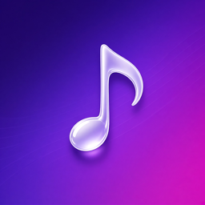

Learn NotesПолитика конфиденциальности
Коротко: Learn Notes не собирает данные о вас, разработчик ничего не получает. Микрофон нужен только для ответов, которые вы включили сами, звук не записывается. Для некоторых языков названную вслух ноту распознают серверы Apple.
Действует с 25 ноября 2026 года. Относится к приложению Learn Notes (в русской версии — «Учить Ноты») для iPhone и iPad. Микрофон и распознавание речи появились в версии 2.3.
Что мы не делаем
- Не собираем и не храним на своих серверах никаких данных: у Learn Notes нет своих серверов.
- Нет учётных записей, аналитики, рекламы, сторонних SDK и отслеживания между приложениями и сайтами.
- Ничего не продаём и не передаём рекламным или аналитическим компаниям. Вне устройства работают только сервисы Apple, перечисленные ниже.
Микрофон
Микрофон нужен только для необязательных ответов. Все они выключены, пока вы их не включите:
- игра на гитаре в «Грифе»;
- пение в игре «На слух»;
- ответы голосом в «Названиях», «Клавишах», «Грифе» и «На слух» с одной нотой.
Доступ запрашивается, когда вы начинаете игру с таким ответом. Если отказать, остаются кнопки. Микрофон работает, пока идёт партия, и выключается, когда она закончилась, вы из неё вышли или приложение ушло в фон.
При игре на гитаре и пении высоту звука определяет само приложение на устройстве. Звук разбирается на лету: он не записывается, не сохраняется и никуда не передаётся.
Распознавание речи
Ответы голосом использует системное распознавание речи Apple, на него iOS спрашивает отдельное разрешение. Где обрабатывается звук, зависит от языка и устройства:
- На устройстве — если iOS умеет распознавать этот язык на вашем устройстве. Тогда приложение требует распознавания только на устройстве, и звук его не покидает.
- На серверах Apple — если не умеет. Тогда звук с микрофона, пока идёт партия с ответами голосом, передаётся Apple и обрабатывается по её правилам.
Язык распознавания — язык приложения. Для сербского берётся сербское распознавание, а если его нет, хорватское. Если для вашего языка распознавания нет совсем, используется английское. Для любого из них действует то же правило: на устройстве, если это возможно, иначе на серверах Apple.
Разработчик не получает ни звука, ни текста. Распознанный текст показывается на экране во время игры и не сохраняется. Не хотите, чтобы речь обрабатывала Apple, — не включайте ответы голосом: кнопки, гитара и пение распознаванием речи не пользуются.
Что хранится на устройстве
- Настройки: время игры, ключ, октавы, знаки альтерации, диапазон ладов, способы ответа, показан ли приветственный экран.
- Результаты партий, которые вы сохранили: игра, дата, длительность, очки, число верных и неверных ответов, настройки партии.
- Статистика по нотам: сколько раз вы ответили верно и неверно на каждую ноту в каждой игре и сколько времени заняли ответы.
- Покупки: отметки о сделанных покупках и цены, полученные из App Store.
- Служебный файл распознавания речи со списком названий нот. Вашего голоса в нём нет.
Результат удаляется смахиванием в «Результатах», статистика сбрасывается на экране «Статистика по нотам». Всё, что хранится на устройстве, удаляется вместе с приложением. Как данные любого приложения, они могут попасть в резервную копию устройства.
iCloud
Результаты и статистика по нотам синхронизируются между вашими устройствами через хранилище iCloud, привязанное к вашей учётной записи Apple. Вместе с ними хранятся случайные номера удалённых результатов и время сброса статистики, чтобы удалённое не вернулось с другого устройства. Настройки и отметки о покупках через iCloud не передаются. Разработчик к этим данным доступа не имеет.
Если iCloud выключен, данные остаются на устройстве. После удаления приложения копия в вашем iCloud может сохраниться и вернуться при повторной установке. Чтобы её не осталось, сначала удалите результаты и сбросьте статистику.
Game Center
При запуске приложение обращается к Game Center, и iOS может предложить войти. Если вы вошли и после партии на время нажали «Сохранить», очки отправляются в две таблицы рекордов Apple: этой игры и общую. Другие игроки видят их вместе с вашим псевдонимом в Game Center по правилам Apple и вашим настройкам Game Center. Без входа очки никуда не отправляются, а игры работают как обычно. Практика в Game Center не попадает.
Покупки
Басовый ключ, «На слух» и «Гриф» покупаются и восстанавливаются через App Store. Оплату обрабатывает Apple, платёжных данных приложение не видит и хранит только отметку о том, что покупка сделана. При запуске приложение запрашивает у App Store цены того, что ещё не куплено.
Оценка приложения
«Оценить приложение» в Настройках открывает системное окно оценки. Его показывает Apple, и оценку получает Apple. Приложение не узнаёт, что вы ответили.
Разрешения
| Разрешение | Зачем |
|---|---|
| Микрофон | Услышать ноту, которую вы играете, поёте или называете. Звук не записывается. |
| Распознавание речи | Превратить названную ноту в ответ. Запрашивается, только если включены ответы голосом. |
Других разрешений Learn Notes не запрашивает. Оба можно отозвать в Настройках iOS.
Дети
Приложение не предназначено специально для детей и не собирает данные ни о ком, включая детей.
Изменения
Если политика изменится, новая версия появится на этой странице с новой датой.
Связь
Вопросы о приватности можно задать на странице поддержки.
Privacy Policy
In short: Learn Notes collects no data about you, and the developer receives nothing. The microphone is used only for answers you turn on yourself, and audio is not recorded. For some languages, a note you say aloud is recognised on Apple's servers.
Effective November 25, 2026. Covers the Learn Notes app («Учить Ноты» in Russian) for iPhone and iPad. The microphone and speech recognition were added in version 2.3.
What we don't do
- We collect and store no data on our servers: Learn Notes has no servers of its own.
- No accounts, analytics, advertising, third-party SDKs, or tracking across apps and websites.
- Nothing is sold or passed to advertising or analytics companies. Off the device, only the Apple services listed below are involved.
Microphone
The microphone is used only for optional answers. All of them are off until you turn them on:
- playing a guitar in Fretboard;
- singing in Ear Training;
- voice answers in Names, Keys, Fretboard, and Ear Training with single notes.
Access is requested when you start a game with such an answer. If you refuse, the buttons remain. The microphone runs while a round is on and turns off when the round ends, you leave it, or the app goes to the background.
When you play a guitar or sing, the app works out the pitch itself, on the device. Audio is analysed as it arrives: it is not recorded, stored or sent anywhere.
Speech recognition
Voice answers use Apple's system speech recognition, for which iOS asks a separate permission. Where the audio is processed depends on the language and the device:
- On the device, if iOS can recognise that language on your device. The app then requires on-device recognition only, and the audio does not leave it.
- On Apple's servers, if it can't. Microphone audio during a round with voice answers is then sent to Apple and handled under its privacy policy.
The recognition language is the app's language. For Serbian, Serbian recognition is used, or Croatian if there is none. If your language has no recognition at all, English is used. The same rule applies to each of them: on the device when possible, otherwise on Apple's servers.
The developer receives neither audio nor text. The recognised text is shown on screen during the game and is not stored. If you don't want Apple to process your speech, leave voice answers off: the buttons, the guitar and singing don't use speech recognition.
What is stored on the device
- Settings: game time, clef, octaves, accidentals, fret range, ways to answer, and whether the welcome screen was shown.
- Results of the rounds you saved: the game, date, duration, score, right and wrong answers, and the round's settings.
- Note statistics: how often you answered each note right and wrong in each game, and how long the answers took.
- Purchases: flags for what you bought, and the prices received from the App Store.
- A service file for speech recognition with a list of note names. Your voice is not in it.
Swipe a result in Results to delete it; reset the statistics on the Note statistics screen. Deleting the app deletes everything stored on the device. Like any app's data, it may be included in a device backup.
iCloud
Results and note statistics sync between your devices through iCloud storage tied to your Apple Account. Random identifiers of deleted results and the time of a statistics reset are kept with them, so that what you delete doesn't come back from another device. Settings and purchase flags are not sent through iCloud. The developer has no access to this data.
If iCloud is off, the data stays on the device. After you delete the app, the copy in your iCloud may remain and come back when you reinstall. To leave nothing behind, delete the results and reset the statistics first.
Game Center
At launch the app contacts Game Center, and iOS may offer to sign you in. If you are signed in and tap Save after a Timed round, the score is sent to two Apple leaderboards: that game's and the overall one. Other players see it with your Game Center nickname, under Apple's rules and your Game Center settings. If you are not signed in, scores are not sent anywhere and the games work as usual. Practice rounds are never sent.
Purchases
The bass clef, Ear Training and Fretboard are bought and restored through the App Store. Apple handles the payment; the app never sees payment details and keeps only a note that the purchase was made. At launch the app asks the App Store for the prices of what you haven't bought.
Rating the app
Rate the App in Settings opens the system rating window. Apple shows it and receives the rating. The app does not learn what you answered.
Permissions
| Permission | Why |
|---|---|
| Microphone | Hear the note you play, sing or say. Audio is not recorded. |
| Speech Recognition | Turn the note name you say into an answer. Requested only if voice answers are on. |
Learn Notes asks for no other permissions. Both can be withdrawn in iOS Settings.
Children
The app is not directed at children and collects no data about anyone, children included.
Changes
If this policy changes, the new version will appear on this page with a new date.
Contact
Privacy questions are welcome on the support page.